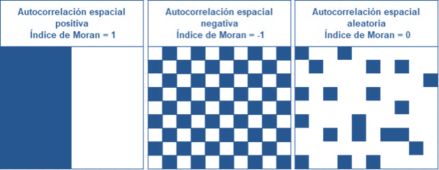
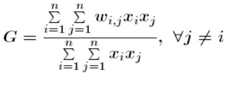
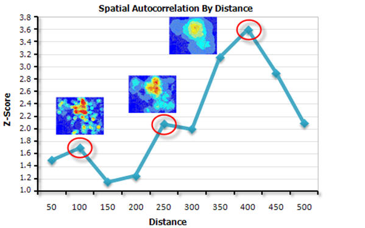
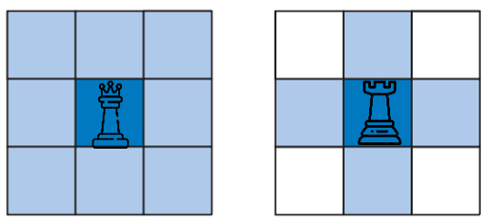

Índices de correlación espacial
Los índices de correlación espacial miden la dependencia espacial de una variable.
Los métodos de autocorrelación espacial más conocidos son I de Moran y G general de Getis-Ord. El último método tiene un carácter local, mientras que el primero permite analizar el espacio de una forma global.
Índice de Moran
Es la medida de autocorrelación espacial que se encuentra más frecuentemente en la literatura del análisis espacial.
La hipótesis nula: "no existe agrupación espacial de los valores de la variable"
El índice viene dado por la siguiente expresión:
Los valores negativos de I indican una autocorrelación espacial negativa. Los valores positivos de I indican una autocorrelación espacial positiva. Los valores de I próximos a cero indican que no hay estructura.

Las relaciones espaciales se pueden buscar por distancias, por vecinos próximos o por contigüidad (cuando hablamos de entidades tipo polígono)
Las constricciones que tiene el cálculo del índice son las siguientes:
- Los resultados no son confiables con menos de 30 entidades.
- Todas las entidades deben tener al menos un vecino.
- Ninguna entidad debe tener todas las otras entidades como vecinos.
- En caso de que los valores de la variable estén sesgados, las entidades debían tener aproximadamente ocho vecinos cada una.
G general de Getis-Ord
Mide el grado de concentración para valores altos o bajos.
La hipótesis nula: "no existe agrupación espacial de los valores de la variable"
Consiste en una relación entre la media ponderada de los valores de las ubicaciones vecinas y la suma de todos los valores, sin incluir el valor de la ubicación (xi)

Un valor mayor que la media sugiere un conglomerado Alto o un punto caliente, un valor menor que la media, indica un conglomerado Bajo o un punto frío.
El estadístico G General Getis-Ord es más adecuado cuando se tiene una distribución bastante uniforme de los valores y se buscan picos espaciales inesperados de valores altos. Sin embargo, cuando los valores altos y bajos se agrupan, tienden a anularse mutuamente.
Autocorrelación Espacial Incremental
Mide la autocorrelación espacial a una serie de distancias.
Las puntuaciones z reflejan la intensidad de la agrupación espacial, y las puntuaciones z máximas estadísticamente significativas indican las distancias en las que los procesos espaciales que promueven la agrupación son más pronunciados.
Estas distancias máximas suelen ser valores apropiados para herramientas con un parámetro de distancias de banda o radio de distancia.

Fuente: Manual ArcGIS
La proximidad entre los valores viene dada por wij, que es un peso geográfico que a menudo se establece en 1 cuando las ubicaciones i y j son vecinas y en 0 cuando no lo son.
se puede buscar siguiendo distintas conexiones topológicas:

Los valores vecinos tienden a ser diferentes.
Los valores vecinos tienden a ser similares.